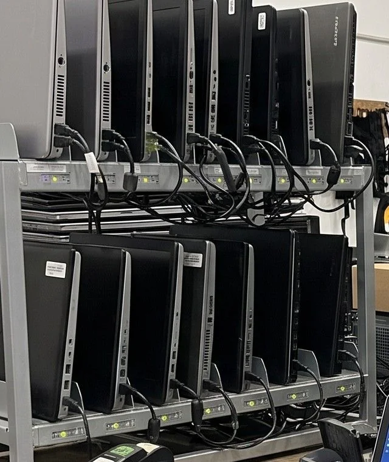
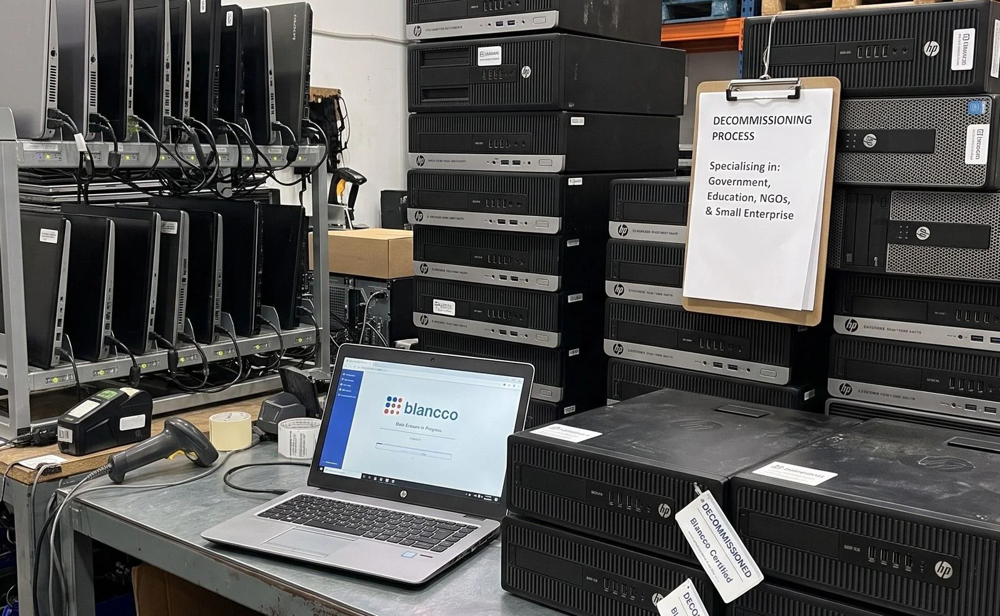

01 / 05 · Certified data erasure
Blancco certified erasure
Blancco · NIST 800-88
The industry-standard erasure tool trusted by governments and banks, overwriting every sector and verifying the result.
- Meets the NIST 800-88 standard for media sanitisation.
- Works on hard drives, SSDs and NVMe drives in laptops, desktops and servers.
- Each erasure is verified before the drive is passed.

02 / 05 · Certified data erasure
A certificate for every drive
Proof you can hand to compliance
A tamper-proof, cryptographically signed erasure report, matched to each serial number.
- One certificate per drive, not one for the whole job.
- Matched to your asset list, so an auditor can check any device.
- Kept on file, so a lost copy can be sent again.

03 / 05 · Certified data erasure
Many machines at once
Erasure racks
Dedicated racks let many laptops and desktops be wiped at the same time, so large jobs move quickly.
- Whole fleets wiped side by side.
- Each machine is tagged, so results never get mixed up.

04 / 05 · Certified data erasure
Drives that can't be wiped are destroyed
Physical destruction
Drives that are faulty or can't be wiped are physically destroyed, and that is recorded too.
- Every destroyed drive is listed on the report by serial number.
- No drive leaves without being either certified or destroyed.

05 / 05 · Certified data erasure
Chain of custody, kept local
Pickup to certificate
Each drive is tracked from pickup to certificate by its asset tag and serial number.
- Your equipment stays in Darwin, handled by the person you deal with.
- Ask at any time where a device is up to.
